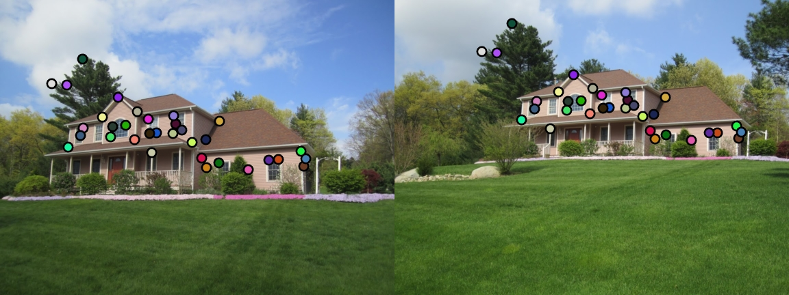
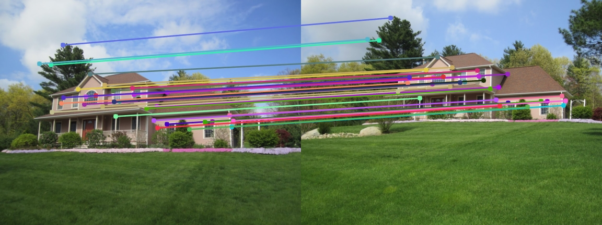

Project 2: Local Feature Matching
The goal of this project was to implement a local feature matching algorithm in three major steps:
- Interest point detection
- Local feature description
- Feature matching
Interest Point Detection
Interest points were found using a basic Harris corner detector. The X and Y image gradients were first computed with a square Gaussian filter of size feature_width = 16 and σ = 1. The X and Y image derivatives were found by convolving their respective gradients with the input image. All three squares of image derivatives were then found with the X and Y derivatives.
These squares of image derivatives were convolved with a different Gaussian filter of size = 15 and σ = 1. I found that setting the size of this Gaussian slightly smaller than that of the first Gaussian (16) produced more total matches at about the same accuracy.
Using these image derivatives, I calculated a cornerness score for each pixel using the cornerness function with α = 0.05. I found that increasing α rapidly generated fewer interest points. α values less than 0.05 generally did not seem to have much effect.
Next, I performed a simple non-maxima suppression by suppressing pixels whose cornerness scores were less than 0.01% of the entire image's maximum cornerness score. Higher threshold values significantly reduced the number of interest points, while lower threshold value significantly increased the amount of noisy interest points.
Finally, a sliding window technique was used to retain only the maximum value in each window.
Local Feature Description
Local features were described with a SIFT-like algorithm to describe interest points in 128 dimensions. Again, a Gaussian filter of size feature_width = 16 and σ = 1 was used to find the X and Y image gradients for calculating the respective image derivative; larger σ values resulted in a greater number of bad matches while retaining roughly the same number of good matches.
The image derivatives were then used to find the orientation magnitude and angle at each pixel. The angles were binned into one of eight octants which correspond to the eight main compass directions to check for rotation invariance.
Each interest point has a feature_width x feature_width window built around it, which is divided into a 4 x 4 grid of cells. The magnitudes and corresponding orientation octants in each cell are retrieved and used to attempt to describe all 128 dimensions of every interest point.
Finally, all of the features are normalized and raised to the 0.5 power to help improve matching performance, as described in the file template. Powers greater than 0.5 were found to reduce accuracy with slightly fewer matches, but powers less than 0.5 were found to increase accuracy with very few matches at all.
Feature Matching
Feature matching was accomplished simply with the nearest neighbor distance ratio test. The Euclidian distance was first calculated between each corresponding feature from both images and sorted in ascending order. Then, for each feature in one image, the distances to its nearest two neighbors in the second image were divided by each other to produce a ratio between 0 and 1. Ratios below about 0.75 tend to correspond with most confident matches, as shown in Lowe IJCV 2004. Features below this threshold were considered a match and returned as the final result of local feature matching.
Results
Notre Dame - 122 total good matches, 11 total bad matches. 92% accuracy


Mount Rushmore - 205 total good matches, 7 total bad matches. 97% accuracy


Episcopal Gaudi - 0 total good matches, 1 total bad matches. 0% accuracy


Extra Image Pairs
Capricho Gaudi


House
 Pantheon Paris


Sacre Coeur


Sleeping Beauty Castle Paris


Statue of Liberty